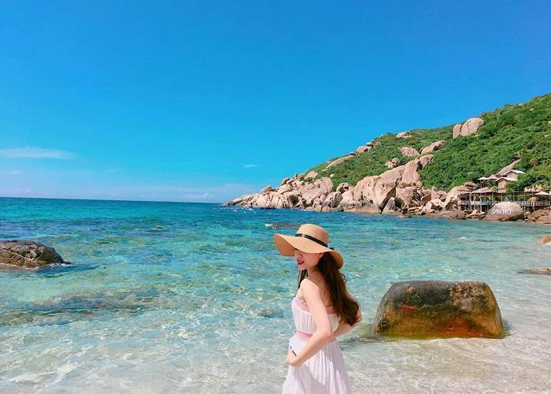
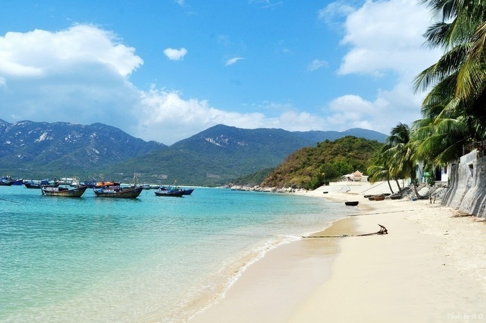
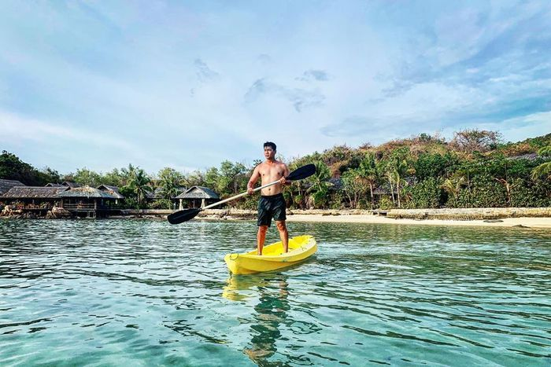
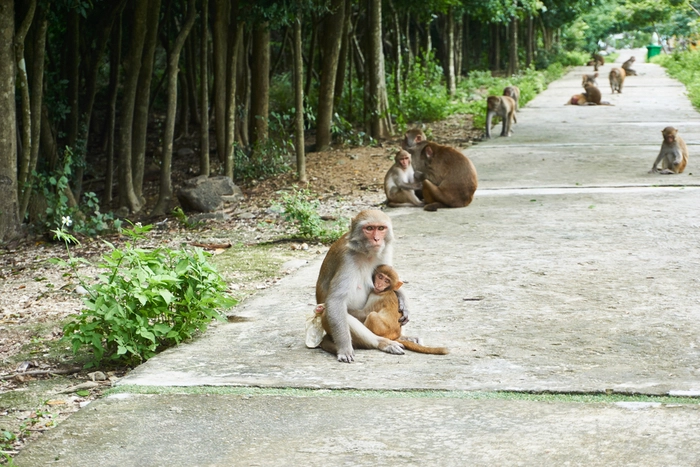
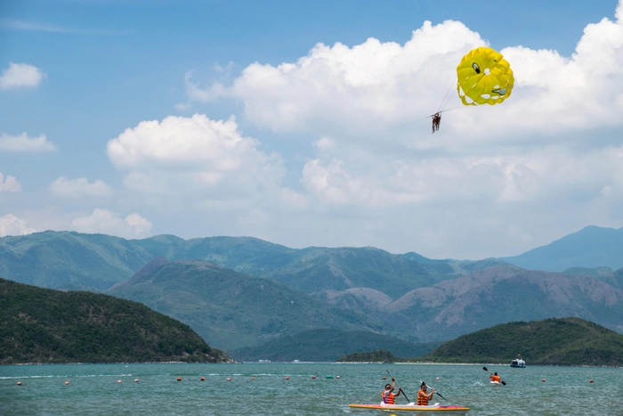
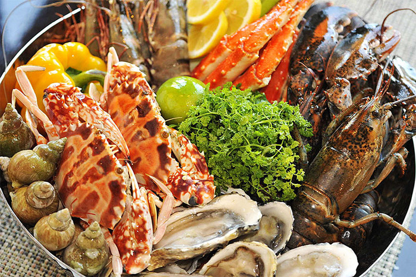
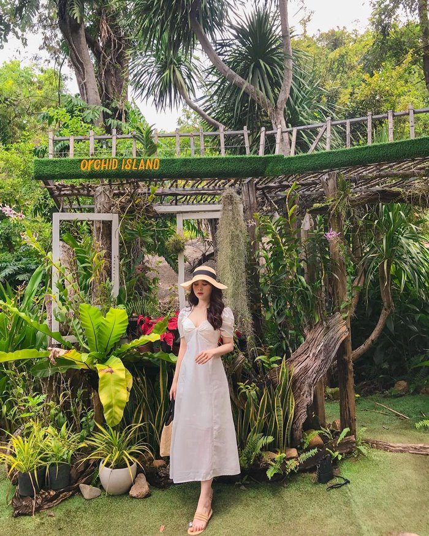
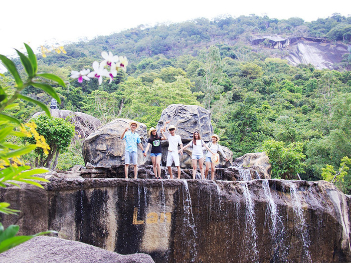

1. Nên đi du lịch Hòn Hèo vào mùa nào?
Mùa nào đến đảo Hòn Hèo ở Nha Trang cũng có những trải nghiệm thú vị riêng. Tùy vào sở thích của bản thân mà bạn có thể chọn lựa thời điểm du lịch phù hợp.
Khí hậu Nha Trang được chia thành 2 mùa rõ rệt: mùa khô và mùa mưa. Một số tháng cao điểm du lịch (từ tháng 1 đến tháng 6), lượng khách đổ về lớn, ngày cuối tuần hoặc các kỳ nghỉ lễ dài sẽ khá đông đúc và náo nhiệt. Ngược lại, từ cuối tháng 10 trở đi, khi thời tiết chuyển lạnh, lượng du khách đến du lịch thấp hơn sẽ rất phù hợp cho những ai có nhu cầu nghỉ dưỡng thư giãn và giải tỏa căng thẳng.
Nhìn chung, thời điểm thích hợp nhất để du lịch đảo Hòn Hèo Ninh Hòa Khánh Hòa là từ tháng 7 đến tháng 9 hằng năm. Đây là lúc thời tiết Nha Trang khá tốt, nhiệt độ môi trường không quá cao, ít mưa và nắng đẹp.
2. Review Hòn Hèo Nha Trang có gì hấp dẫn
Gọi bán đảo Hòn Hèo là điểm đến hấp dẫn bậc nhất của thành phố biển Nha Trang quả không ngoa, bởi nơi này chứa đựng vô vàn thú vị có thể khiến bạn đi từ ngạc nhiên này sang bất ngờ khác.
_1629706620.jpg)
2.1 Du lịc biển Hòn Hèo Ninh Vân tuyệt đẹp
Nằm giữa một cụm các đảo lớn bé khác nhau như hòn Lao, hòn Rớ, hòn Lăng, hòn Thị, hòn Sầm... Hòn Hèo được bao bọc như một viên ngọc quý. Mặt biển phẳng lặng, trong xanh với bờ cát trắng trải dài, phía sau lưng là những dãy nhà lợp lá bình dị, vẫn vẹn nguyên nét mộc mạc hoang sơ. Nhiều du khách đến với Hòn Hèo nhận định rằng nơi này sở hữu một bãi biển vô cùng quyến rũ.
Nhờ nét đẹp tự nhiên mà thiên nhiên ban tặng, du khách tham quan Hòn Hèo có thể dễ dàng tác nghiệp hàng trăm bức ảnh xinh lung linh mà không sợ “trùng lặp” ý tưởng với bất kỳ “phó nháy” nào.
2.2 Khám phá xã Ninh Vân ở Hòn Hèo Nha Trang
Đã nhắc đến du lịch Nha Trang, không thể không kể đến chuyến tham quan xã Ninh Vân, nằm trên bán đảo Hòn Hèo.. Một làng quê tươi đẹp được bao bọc bởi sau lưng là núi, phía trước là biển, ở giữa là những mái nhà bình dị san sát nhau cùng các cánh đồng tỏi vuông vức đẹp hút hồn.
Hầu hết người dân xã Ninh Vân làm nghề đánh bắt, nuôi trồng hải sản. Chính vì vậy, bạn có thể dễ dàng thưởng thức những loại hải sản tươi sống, ngon ngọt được chế biến kỳ công hấp dẫn vô cùng.
2.3 Trải nghiệm cuộc sống bình dị tại Hòn Hèo
Trên đảo Hòn Hèo, các dịch vụ cho thuê lều ven biển rất phổ biến. Bạn có thể lựa chọn một nơi nghỉ ngơi phù hợp, tận hưởng cuộc sống bình dị một ngày tại đây. Các phiên chợ sáng buôn bán rất nhiều hải sản tươi ngon với mức giá khá rẻ, du khách có thể đến đây tham quan và lựa chọn.
Vì là một đảo còn hoang sơ, nên bạn đừng quá bất ngờ nếu gặp phải những đàn khỉ đang lang thang kiếm ăn, những con heo rừng, voọc đầu trắng bỗng dưng xuất hiện. Tuy tinh nghịch và hơi phá phách, nhưng hầu hết các loài động vật trên đảo đều không gây ảnh hưởng đến du khách tham quan.
Các hoạt động giải trí trên đảo rất đa dạng. Bạn có thể chèo thuyền kayak, ca nô kéo, lặn biển ngắm san hô, dù lượn… Những hoạt động này khá phù hợp với các bạn đam mê cảm giác mạnh và thích chinh phục thử thách.
Ẩm thực trên đảo Hòn Hèo quả đúng là tuyệt phẩm. Hải sản tươi ngon được chế biến kỳ công, mang đến hương vị rất đặc biệt, rất riêng. Một vài đặc sản như thịt đà điểu, thịt cá sấu… cũng khiến menu của hòn đảo này trở nên phong phú và làm say lòng du khách ghé thăm.
Bạn có thể đến dùng bữa tại các nhà hàng trên đảo, nhưng sẽ tuyệt vời hơn nếu bạn thử trải nghiệm ẩm thực dân dã tại một số quán ăn địa phương.
2.4 Tham quan Hòn Hèo suối Hoa Lan
Di chuyển sâu vào bên trong đảo, du khách sẽ đến với khu du lịch sinh thái Suối Hoa Lan. Đây là địa điểm tham quan rất nổi tiếng tại Nha Trang, được nhiều du khách trong và ngoài nước biết đến.
Suối Hoa Lan lưu giữ và sở hữu nhiều loài lan quý, trong đó phải kể đến Lan giả hạc Hòn Hèo Nha Trang. Loài lan này có màu tím nhạt, họng trắng tuyết, mỏ đỏ lạ mắt và mùi thơm quyến rũ. Đây được xem là loài hoa đắt tiền, khó mua và chỉ có ở Hòn Hèo Nha Trang.
Suối Hoa Lan được hình thành từ nhiều suối nhỏ, người dân nơi đây vẫn quen gọi là suối Tử Sĩ, quanh năm nước xanh trong, chảy róc rách, hòa cùng tiếng chim kêu, phảng phất hương núi rừng mang đến cho du khách cảm giác thư thái lạ kỳ.
Tham quan suối Hoa Lan Hòn Hèo, bạn cũng đừng bỏ trải nghiệm tắm suối, bơi thuyền, câu mực… hay ngủ đêm trên nhà sàn Tây Nguyên nhé. Những hoạt động này chắc chắn sẽ mang đến cho du khách nhiều bất ngờ thú vị trong chuyến du lịch của mình.
